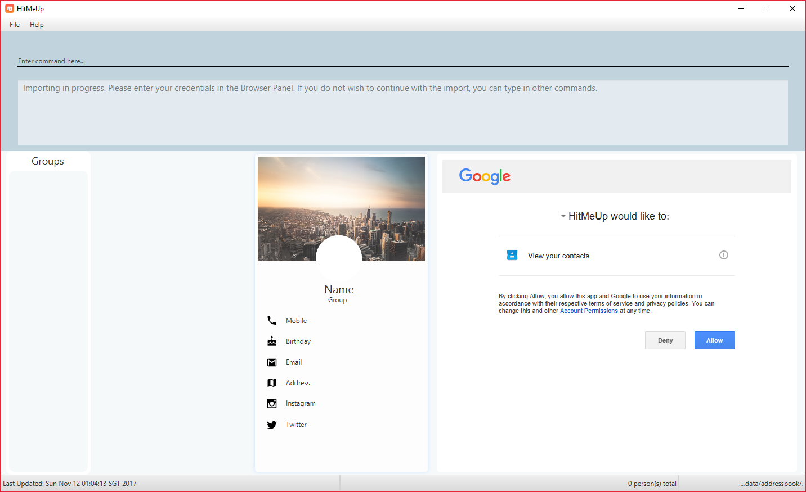
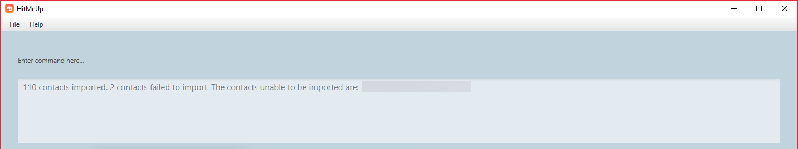

Project: HitMeUp

-
HitMeUp is an address book application designed with the sociable user in mind.
-
It aims to be a one-stop center for managing and interacting with contacts.
-
A Command Line Interface (CLI) is primarily used for input
-
This project has been forked from the AddressBook-Level4 repository
Features
-
Add a contact using only their name and number, or with any of the following supported fields: Email, Address, Birthday, Twitter, Instagram, Display Picture, Tag
-
Import your existing contacts from Google Contacts
-
Export individual contacts to easily share with others
-
Search by a contact’s name, starting alphabet, birthday month or groups
-
Email contacts quickly without having to copy their email addresses
-
View your groups at a glance with the groups tab
-
Keep up with your contacts through the social command
-
View your contacts' addresses quickly in Google Maps
Acknowledgements
-
Java FX tutorial by Marco Jakob.
Licence : MIT
Code contributed: [Functional code] [Test code]
Importing contacts : import
Allows you to import contacts from either Google Contacts.
Format: import SERVICE_NAME
-
import google-
Opens the Google authentication page (as shown below) in HitMeUp to grant the app access to your contacts.

Figure 3.11.1 Google Authentication Page
-
Once you have logged in with your credentials, the consent page below will be loaded:
Figure 3.11.2 Google Consent Page
-
After granting access, HitMeUp will display a progress bar (as shown below) to indicate the progress of import.

Figure 3.11.3 HitMeUp Import Progress
-
After import has completed, the application will show the number of contacts successfully imported and the names of contacts that were unable to be imported.
Figure 3.11.4 Import Result Display
-
End of Extract
Justification
Users of HitMeUp would want a quick and easy way to get started with the application, especially if they have a large amount of contacts.
Having an import function that takes in all their contacts from Google in a matter of seconds allows them to not worry about the transition
to a new application.
Import mechanism
The import mechanism is facilitated by Google’s People API. It supports reading up to 1000 contacts from the user’s personal Google account and parsing them into a format that can be added to the address book. The import mechanism only supports adding contacts from Google but iCloud import is scheduled for release in a later version of the application.
Before any importing can be done, HitMeUp to be authorized to request data from Google’s API. This is done using the OAuth 2.0 protocol as it is the standard used by Google for the People API. As there are libraries from Google that handle authorization, these libraries have been used in the implementation of the import mechanism.
Client information such as the Client ID and Client secret are first loaded into a GoogleClientSecrets object. The client secrets are stored in a JSON file and since the executable will be distributed to users, as per
Google’s OAuth documentation, the client secrets are not treated as a secret in this context. After which, A GoogleAuthorizationCodeFlow object is set up
using the GoogleClientSecrets, HttpTransport, JsonFactory objects and the scope of access desired to the user’s Google Contacts data. In this implementation, we have chosen read-only as we are only importing
contacts and no modification to the user’s data on Google will be performed. An AuthorizationUtil object is then created using the previously mentioned GoogleAuthorizationCodeFlow object, and also a LocalServerReceiver object which allows the application to listen on the local
web server for the authorization code that is provided when the user gives consent to access his/her data. The AuthorizationUtil inherits from AuthorizationCodeInstalledApp as the browse method was modified to allow for the authorization
URL to be opened in the BrowserPanel.
After which, the authorization flow can finally begin. The following sequence diagram illustrates this process.

(Diagram from: https://developers.google.com/identity/protocols/OAuth2, reused under Creative Commons Attribution 3.0 License)
A token is first requested by invoking the authorize method from GoogleUtil where an AuthorizationUtil loads the page for the user to login to his/her Google account in the BrowserPanel.
Once the user provides consent for the address book to access the data, an authorization code is sent back to the LocalServerReceiver object and passed on to the GoogleAuthorizationCodeFlow
object so that the code can be exchanged for a token. Once the token is received, a Credential object is created and returned to the executeUndoableCommand method.
The Credential object is then passed to a retrieveContacts method from GoogleUtil that creates a PeopleService object that allows the application to interact with Google’s People API.
The parameters used to get the list of the user’s connections (Google’s term for contacts) are as follows:
PageSize: 1000 PersonFields: Names, EmailAddresses, PhoneNumbers, Addresses, Birthdays
A PageSize (the number of connections to fetch) of 1000 is chosen as it is the amount of contacts that the address book should be able to hold before it gets sluggish. The PersonFields chosen are the ones most relevant to storing a contact in HitMeUp.
retrieveContacts will then pass the List<Person> of connections back to the caller and finally, the importContacts method will be called on the List<Person>.
Refer to the code example below for implementation of the importContacts method:
-
Code listing:
/** * Imports contacts into the application using the given {@code List<Person>} */ public void importContacts(List<Person> connections) { Task<Void> task = new Task<Void>() { @Override protected Void call() throws Exception { int amountToAdd = connections.size(); invalidPeople = new ArrayList<String>(); for (Person person : connections) { seedu.address.model.person.Person toAdd = GoogleUtil.convertPerson(person); if (toAdd == null) { invalidPeople.add(person.getNames().get(FIRST_PERSON_INDEX).getDisplayName()); continue; } try { model.addPerson(toAdd); peopleAdded++; } catch (DuplicatePersonException e) { e.printStackTrace(); } updateProgress(peopleAdded, amountToAdd); } return null; } }; // housekeeping code for the start/end of the Task }
The importContacts method is implemented using the Task class from JavaFX and takes care of importing contacts to the address book. importContacts is run in a separate Thread from the main program.
It parses every connection from the List<Person> using a convertPerson method in GoogleUtil that converts a Person object to a seedu.address.model.person.Person such that it can be added to the address book.
A progress bar for importing is also shown to the user, implemented using the progressProperty() method of the Task class.
The following sequence diagram shows how the import operation works:
The import mechanism is built upon an UndoableCommand, which means that any changes made by the command can be easily reversed by calling the
undo command.
Design Considerations
Aspect: How import executes
Alternative 1 (current choice): Individually adds each contact.
Pros: User is able to see each contact being added.
Cons: Slower than adding retrieved contacts all at once as the data has to be written to disk every time a contact is added individually
Alternative 2: Contacts are only added after every single Person is parsed
Pros: Faster than adding as soon as each Person is parsed as data is written all at once, instead of multiple times
Cons: Requires a new method addAllInList to be implemented in model, which only has limited use as import is the only command doing a batch
addition of contacts
Aspect: How import progress is shown to the user
Alternative 1 (current choice): Show a pop-up progress window indicating how many contacts have been added
Pros: Intuitive for the user to understand
Cons: Difficult to implement as importing contacts takes a (relatively) long time and thus, blocks the JavaFX thread from updating the UI in a timely manner. As such, the progress bar will not be updated until the importContacts function is completed.
Threading has to be used to allow the progress bar to update as the importContacts method is running.
Alternative 2: Show the user how many contacts have been added in ResultDisplay
Pros: Easy to implement as no new UI elements have to be added
Cons: Not as user-friendly as having a progress bar
Aspect: Implementation of authorization
Alternative 1 (current choice): Use the BrowserPanel to show the authorization page
Pros: Clearer for the user to understand and focus is kept on the main application.
Cons: Requires implementing a new class as modification to the existing classes provided by the Google Libraries is needed to allow for the
authorization URL to be shown in the BrowserPanel
Alternative 2 : Pop-up the authorization page in the user’s default browser
Pros: Easy for the user to authorize as they may already be logged in to their Google account on their browsers.
Cons: Takes the focus away from the main application to the user’s default browser, which may be a jarring user experience.
End of Extract
Viewing a contact’s address : location
View a person’s address in the browser panel using Google Maps.
Format: location INDEX
Examples:
-
location 1
Opens up the Google Maps location of the person at index 1.
End of Extract
Justification
While having the location of a contact is useful, it is an inconvenience to the user to copy the address into Google Maps manually in order to figure out the directions to a friend’s place. As such, the location command allows the user to directly view the location of a contact in HitMeUp without having to switch to a browser.
Location
The location command is facilitated by the BrowserPanel class. It allows HitMeUp to load any URL through the use of the general ShowUrlEvent class
that sends an event to the MainWindow class, which subsequently invokes the handleShowUrlEvent that allows the URL to be displayed in the BrowserPanel. The URL
in this context would be a Google Maps URL which contains the address of the contact at the index selected by the user.
The input from the user will first be parsed by the LocationCommandParser which will determine whether or not the command conforms to the expected format.
The following code snippet shows the execute method of the LocationCommand class:
-
Code listing:
public CommandResult execute() throws CommandException { List<ReadOnlyPerson> lastShownList = model.getFilteredPersonList(); // Check if index is valid if (index.getZeroBased() >= lastShownList.size()) { throw new CommandException(Messages.MESSAGE_INVALID_PERSON_DISPLAYED_INDEX); } // Check if Google is reachable if (!GoogleUtil.isReachable()) { throw new CommandException(MESSAGE_FAILURE); } ReadOnlyPerson current = lastShownList.get(index.getZeroBased()); // Check if Person has an address if (current.getAddress().toString().length() == 0) { throw new CommandException(String.format(MESSAGE_NO_ADDRESS, current.getName().toString())); } String finalUrl = GOOGLE_MAPS_URL_PREFIX + parseAddressForUrl(current.getAddress()); EventsCenter.getInstance().post(new ShowUrlEvent(finalUrl)); return new CommandResult(String.format(MESSAGE_SUCCESS, current.getName().toString())); }
After the input is successfully parsed, the userInput is passed to the LocationCommand class where 3 important checks are performed. Firstly, the index that is input by the user is checked to ensure
that it does not exceed the length of the list that is currently shown to the user. Next, a check is performed to see if the Google website is up, otherwise the Google Maps URL
would fail to load. Lastly, a check on the person at the user’s specified index is done to see if he or she has an address. Once these checks are done, the
parseAddressForUrl method of the LocationCommand class takes in the address of the person and appends it to a GOOGLE_MAPS_URL_PREFIX to build the final URL. This method is
included in the LocationCommand class to allow for higher cohesion as this is the only class that would need to parse an address into a Google Maps URL.
The following activity diagram summarizes the flow of the location command:

Design Considerations
Aspect: How the Google Maps URL is passed to the BrowserPanel
Alternative 1 (current choice): Use a showUrlEvent to send the URL to the MainWindow subscriber
Pros: Allows LocationCommand to be more cohesive as it does not need to have an extra method to deal with the logic
for displaying a URL in the BrowserPanel
Cons: LocationCommand class would be more coupled with the EventsCenter class as it relies on the event for its core functionality
Alternative 2: Create a public method in MainWindow for showing a URL in the BrowserPanel
Pros: Easy to implement, only 1 method in MainWindow required and it is called from the execute method of LocationCommand
Cons: Exposes functionality of MainWindow unnecessarily to other classes
End of Extract
Enhancement Proposed: iCloud Contacts Import
External behavior
The iCloud import would be invoked by typing iCloud as the parameter for the import command instead of Google.
Justification
While import from Google Contacts is available, there may be users who have their contacts stored on iCloud instead and would prefer to import from iCloud instead of having to manually add their contacts. Having this feature would allow the user the freedom of choice in which cloud service to import their contacts from, and would thus allow HitMeUp to be a more versatile application.
Implementation
The iCloud import would be facilitated by the CloudKit JS framework provided by Apple in their Developer Program. However, as there are no native Java APIs
provided by Apple for usage, the import would have to be facilitated using HTTP requests in contrast to the implementation of the Google import. The Unirest HTTP Request libraries would be used to achieve this.
A HTTP request would be sent to Apple’s servers with the user’s credentials for authentication. Once authenticated, another request containing parameters to access the contacts
of the authenticated user would be sent, and the returned data would be parsed into a Person and added to the application if the fields are valid.
The following activity diagram summarizes the flow of the iCloud import:
The user’s credentials will never be stored in the application.